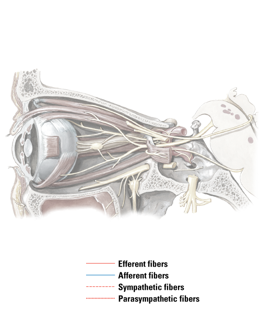

Ciliary ganglion
Short ciliary nerves
Infraorbital nerve
Inferior branch of oculomotor nerve
Pterygopalatine ganglion
Maxillary nerve (CN V2)
Mandibular nerve (CN V3)
Abducens nerve (CN VI)
Trochlear nerve (CN IV)
Oculomotor nerve CN III)
Ophthalmic nerve (CN V1)
Frontal nerve
(cut)
1
2
3
4
5
6
7
8
9
10
11
12